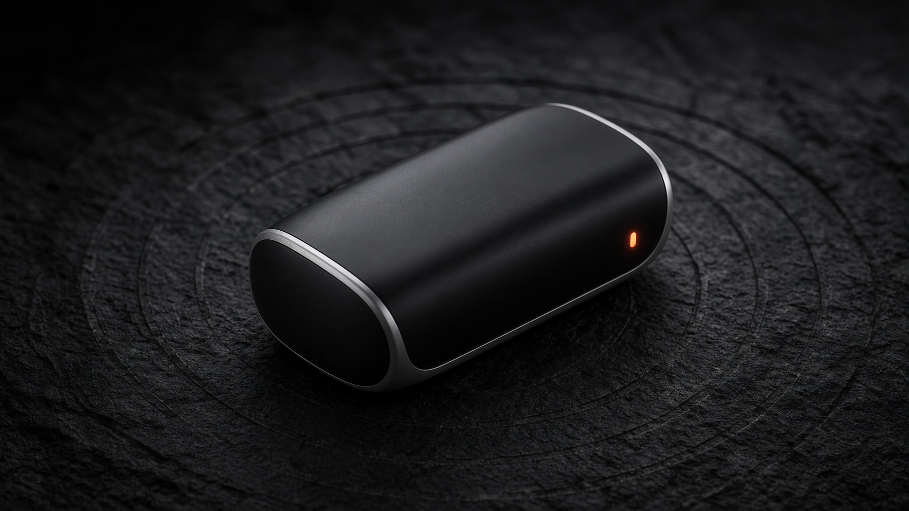
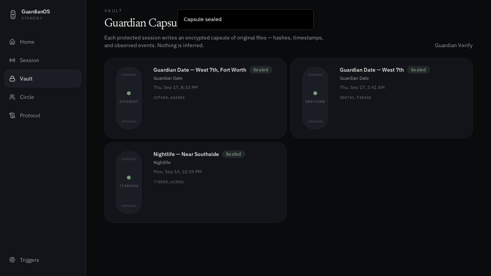
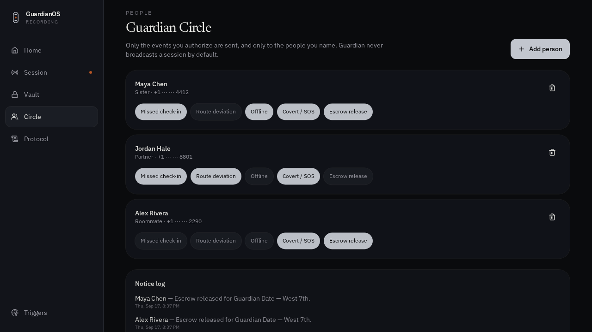

GuardianOS
The black box for your real life
Stay protected.
Preserve the truth.
A personal safety and evidence operating system — not another SOS button.
Campaign briefing01 / 09

The black box for your real life
A personal safety and evidence operating system — not another SOS button.
Campaign briefing01 / 09
The gap
A late meeting. A first date. A rideshare across town. If something happens, investigators do not want guesses. They want the record.
GuardianOS02 / 09
White space
GuardianOS03 / 09
The operating system
Every protected session writes an original, encrypted Guardian Capsule.
GuardianOS04 / 09
Guardian Session
From that moment it records authorized context — location, check-ins, battery, rideshare notes — and recognizes the rules you wrote. It does not decide if you are in danger.
GuardianOS05 / 09

The Capsule
Breadcrumbs, check-ins, notes, and integrity hashes seal into a capsule. Chronologies say “observed event.” Never guilt. Never motive.
GuardianOS06 / 09

Circle · Protocol
If a check-in is missed, Guardian follows only the protocol you authorized — including dead-man evidence escrow. No one else writes the playbook.
GuardianOS07 / 09
When looking ordinary is the protocol
GuardianOS08 / 09
Open the black box
Start a Guardian Session. Write your protocol. Keep the record original.
Not an accusation engine09 / 09